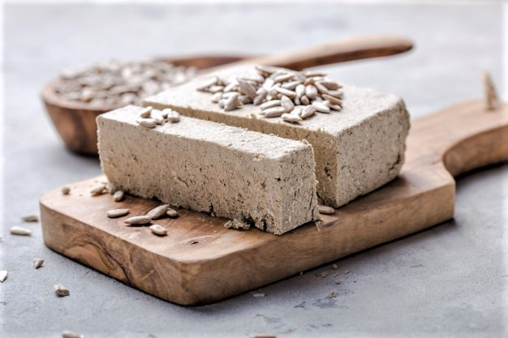
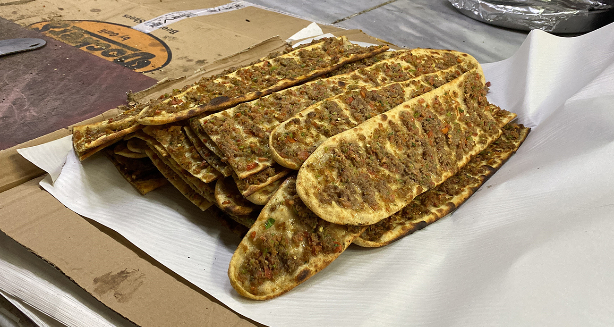

Çankırı Mutfak Kültürü
Anadolu’nun Lezzet Dolu Kalbi

Çankırı, tarihi boyunca farklı medeniyetlere ev sahipliği yapmış, köklü bir Anadolu şehridir. Bu zengin geçmişi, mutfağına da yansımıştır.
Çandır kebabı, Yaren Güzel Helvası ve etli ekmek gibi özgün tatlarla Çankırı, yöresel lezzet severler için keşfedilmesi gereken bir duraktır.
- Yöresel et yemekleri
- Geleneksel helvalar
- Katkısız ürünler
- Yaren kültüründen izler
Öne Çıkan Yemekler ve Mekan Önerileri

Çandır Kebabı
Kuzu etinin tandırda uzun süre pişirilmesiyle hazırlanan bu kebap, özel günlerin vazgeçilmez yemeğidir.
Nerede Yenir?
- 📠Çandır Sofrası
- 📠Tarihi Çankırı Lokantası
- 📠Yöresel Ev Yemekleri

Yaren Güzel Helvası
Un, şeker ve yağın sabırla kavrulmasıyla yapılan bu helva, özellikle yaren gecelerinde ikram edilir.
Nerede Yenir?
- 📠Helvacı Yaren Usta
- 📠Çankırı Tatlı Evi
- 📠Tarihi Helvacı Durağı

Çankırı Etli Ekmek
İnce hamurun üzerine kıyma, soğan ve baharatlarla hazırlanan iç harç serilir, taş fırında pişirilir. Çıtır ve lezzetlidir.
Nerede Yenir?
- 📠Çankırı Fırın Lezzetleri
- 📠Etli Ekmekçi Ali Usta
- 📠Meşhur Taşfırın